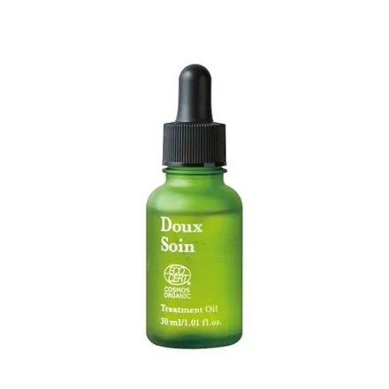

ドゥ ソワン トリートメントオイル
※コスモスオーガニック認証製品
- 種類
- オイル状美容液
- 内容量
- 30mL
- 原産国
- 日本
- 価格
- 9,900円（税込）
使い方
お顔に使用する際は、適量を手にとり、顔全体にやさしくハンドプレスしながらなじませてください。 からだや髪など乾燥が気になる全身にご使用いただけます。
全成分
ホホバ種子油*、アーモンド油*、ヒマワリ種子油、ローズヒップ油*、ザクロ種子油*、バオバブ種子油*、クロフサスグリ芽エキス*、ローズマリー葉エキス*、トウキンセンカ花エキス*、ラベンダー花エキス*、アルニカ花エキス*、ムラサキバレンギク花/葉/茎エキス*、メリッサ葉エキス*、アロエベラ葉エキス*、トコフェロール、香料 *オーガニック原料
ご使用上の注意
- ●お肌に異常が生じていないかよく注意してご使用ください。
- ●化粧品がお肌に合わないとき、即ち次のような場合は、使用を中止してください。使用中、赤み、はれ、かゆみ、刺激、色抜け（白斑など）や黒ずみなどの異常があらわれた場合。使用したお肌に、直射日光があたって上記のような異常があらわれた場合。
- ●お肌に異常があらわれた場合は、そのまま使用を続けますと症状を悪化させることがありますので、皮膚科専門医などにご相談されることをおすすめします。
- ●オーガニック認証製品ですが、全ての方のお肌に合うというわけではありません。とくにお肌の弱い方は、パッチテストを行ってからご使用ください。
- ●傷やはれもの、しっしんなど、異常のある部位にはご使用にならないでください。
- ●目に入らないよう注意し、入った場合はすぐに水かぬるま湯で洗い流してください。
- ●お子様の手の届かないところに保管してください。
- ●直射日光のあたるところや、極端に高温・低温・高湿度のところには保管しないでください。
- ●開封後は早めにご使用ください。
- ●オイルの性質上、成分の一部が沈殿することがありますが、品質には問題ありません。室温に戻してからご使用ください。